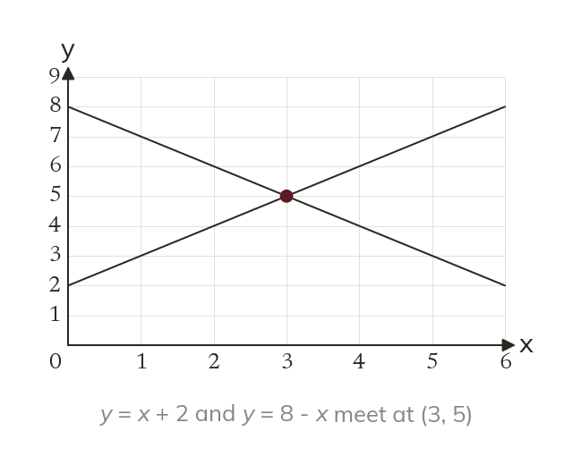

One point on both lines
Simultaneous equations must both hold at once. Where two lines cross, the point lies on both.
Simultaneous equations are two equations in two unknowns that must both hold at once. Every point on a line satisfies that line's own equation, so the point where two lines cross satisfies both equations together.